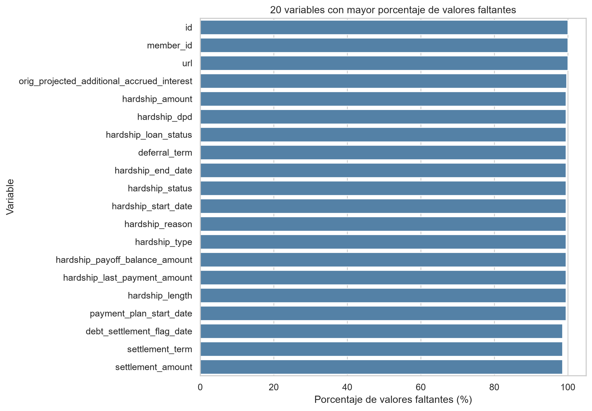

Fase 2: Auditoría de calidad y preprocesamiento inicial
Autor/a
Cristian Guzman
Parte B: Limpieza y preprocesamiento
B.1 Objetivo
El objetivo de esta fase es evaluar la calidad de los datos originales e identificar inconsistencias, valores faltantes, registros duplicados y variables que requieren transformaciones.
Las decisiones de limpieza se realizarán considerando el significado de cada variable y su utilidad para el análisis estadístico y predictivo.
Durante esta primera etapa se realizará una auditoría de calidad sin modificar el conjunto de datos original. Los resultados permitirán establecer criterios de limpieza fundamentados.
B.2 Carga del dataset original
Se importan las librerías necesarias para el procesamiento y análisis de los datos. Posteriormente, se carga el archivo original de LendingClub.
Código
import pandas as pdimport numpy as npimport matplotlib.pyplot as pltimport seaborn as snsfrom pathlib import Pathsns.set_theme(style="whitegrid")ruta = Path("../data/raw/loan.csv")df = pd.read_csv(ruta, low_memory=False)print("Dataset cargado correctamente")print("Filas originales:", df.shape[0])print("Columnas originales:", df.shape[1])
Se conserva el archivo original sin alteraciones para garantizar que el proceso de análisis sea reproducible.
B.3 Auditoría general de calidad
Se construye una tabla de auditoría para evaluar las 145 variables del conjunto de datos.
Para cada columna se identifica su tipo de dato, cantidad de valores faltantes, porcentaje de valores faltantes, número de valores únicos y porcentaje de información disponible.
Esta auditoría permite identificar variables con problemas de disponibilidad y distinguir entre columnas completamente vacías y columnas parcialmente incompletas.
Un porcentaje elevado de valores faltantes no implica necesariamente que una variable deba eliminarse, ya que algunos campos representan situaciones especiales que no aplican a todos los préstamos.
B.4 Evaluación de valores faltantes
B.4.1 Clasificación por porcentaje de valores faltantes
Las variables se clasifican en cuatro categorías según la proporción de información ausente.
Los umbrales utilizados son criterios exploratorios y no representan reglas automáticas para eliminar columnas.
Esta clasificación permite conocer cuántas variables presentan problemas leves, moderados o elevados de disponibilidad.
B.4.2 Visualización de los valores faltantes
Se representan las 20 variables con mayor porcentaje de valores faltantes.
Código
top_nulos = auditoria.head(20)plt.figure(figsize=(10, 7))sns.barplot( data=top_nulos, x="Porcentaje_nulos", y="Variable", color="steelblue")plt.title("20 variables con mayor porcentaje de valores faltantes")plt.xlabel("Porcentaje de valores faltantes (%)")plt.ylabel("Variable")plt.xlim(0, 105)plt.tight_layout()plt.show()

Variables con mayor porcentaje de valores faltantes
La visualización facilita la identificación de las columnas con menor disponibilidad de información.
Las variables relacionadas con dificultades económicas, acuerdos de deuda y segundos solicitantes requieren especial atención, debido a que su ausencia puede estar asociada con características específicas de los préstamos.
B.5 Revisión de registros duplicados
Se verifica la existencia de filas completamente duplicadas en el conjunto de datos original.
Registros duplicados: 0
Porcentaje de duplicados: 0.0 %
La ausencia de filas completamente duplicadas no garantiza que todos los préstamos sean únicos, especialmente porque las variables de identificación pueden estar incompletas.
Por ello, este resultado debe interpretarse como una comprobación de duplicados exactos y no como una validación definitiva de unicidad.
B.6 Identificación de variables problemáticas
B.6.1 Columnas vacías y constantes
Se identifican las columnas que no contienen información y aquellas que presentan un único valor observado.
Código
columnas_vacias = auditoria.loc[ auditoria["Porcentaje_nulos"] ==100,"Variable"].tolist()columnas_constantes = auditoria.loc[ (auditoria["Valores_unicos"] ==1) & (auditoria["Porcentaje_nulos"] <100),"Variable"].tolist()print("Cantidad de columnas vacías:", len(columnas_vacias))print("Columnas completamente vacías:")print(columnas_vacias)print()print("Cantidad de columnas constantes:", len(columnas_constantes))print("Columnas con un único valor observado:")print(columnas_constantes)
Cantidad de columnas vacías: 3
Columnas completamente vacías:
['id', 'member_id', 'url']
Cantidad de columnas constantes: 4
Columnas con un único valor observado:
['deferral_term', 'hardship_type', 'hardship_length', 'policy_code']
Las columnas completamente vacías no aportan información para el análisis de esta versión del dataset.
Por otra parte, las variables constantes pueden tener una utilidad predictiva limitada, aunque su significado debe revisarse antes de excluirlas.
B.6.2 Revisión de rangos financieros
Se analizan los valores mínimos, máximos y principales medidas descriptivas de variables financieras relevantes.
Esta revisión permite detectar valores extremos o potencialmente inconsistentes.
En particular, las variables de ingreso anual y relación deuda-ingreso requieren un análisis posterior de valores atípicos.
No se aplicarán correcciones automáticas, ya que primero es necesario determinar si estos valores corresponden a observaciones válidas, valores especiales o errores.
B.7 Exportación de los resultados de auditoría
Se guarda la tabla de auditoría para facilitar su consulta durante las siguientes fases del proyecto.
El archivo generado contiene los indicadores de calidad correspondientes a todas las variables del conjunto de datos original.
La exportación de esta tabla no modifica los registros originales.
B.8 Conclusiones preliminares
La auditoría inicial permite identificar las principales características de calidad del conjunto de datos de LendingClub.
Se evaluaron los tipos de datos, valores faltantes, registros duplicados, columnas completamente vacías, variables constantes y rangos de las principales variables financieras.
Los resultados obtenidos servirán para establecer criterios de limpieza y preprocesamiento, evitando eliminar información relevante sin una justificación estadística o conceptual.
La presencia de valores faltantes deberá evaluarse considerando el significado de cada variable, especialmente cuando la ausencia de información corresponda a situaciones particulares de los préstamos.
Asimismo, los valores extremos detectados en variables financieras deberán analizarse mediante técnicas estadísticas antes de determinar su tratamiento.
En las siguientes etapas se establecerán las variables que deben conservarse, transformarse o excluirse, considerando los objetivos descriptivos y predictivos del proyecto.
Esta fase constituye una auditoría de calidad; todavía no se han aplicado transformaciones ni eliminaciones sobre los datos originales.
B.9 Selección inicial de variables para el modelado
Se seleccionan variables financieras y crediticias que pueden estar disponibles al momento de originar un préstamo.
Se excluyen las variables relacionadas con pagos realizados, recuperaciones y acuerdos posteriores, para evitar fugas de información en los modelos predictivos.
B.12 Diagnóstico y estrategias para valores faltantes
Se documenta el tratamiento propuesto para los campos incompletos del subconjunto seleccionado. Los estadísticos de imputación se calcularán únicamente con el conjunto de entrenamiento para evitar fugas de información.
Código
estrategias_nulos = pd.DataFrame({"Variable": ["emp_length", "mort_acc", "revol_util", "pub_rec_bankruptcies", "dti", "inq_last_6mths"],"Estrategia": ["Categoría No informado", "Mediana de entrenamiento","Mediana de entrenamiento", "Mediana de entrenamiento","Mediana de entrenamiento y revisión de negativos","Mediana de entrenamiento" ],"Justificación": ["La ausencia no equivale a cero años de empleo","El valor desconocido no implica cero hipotecas","Se evita asignar arbitrariamente cero","Se distingue entre ausencia de datos y ausencia de bancarrotas","Se investigan codificaciones especiales negativas","Una consulta no informada no equivale a ninguna consulta" ]})display(estrategias_nulos)
Variable
Estrategia
Justificación
0
emp_length
Categoría No informado
La ausencia no equivale a cero años de empleo
1
mort_acc
Mediana de entrenamiento
El valor desconocido no implica cero hipotecas
2
revol_util
Mediana de entrenamiento
Se evita asignar arbitrariamente cero
3
pub_rec_bankruptcies
Mediana de entrenamiento
Se distingue entre ausencia de datos y ausenci...
4
dti
Mediana de entrenamiento y revisión de negativos
Se investigan codificaciones especiales negativas
5
inq_last_6mths
Mediana de entrenamiento
Una consulta no informada no equivale a ningun...
B.13 Transformación de tipos de datos
B.13.1 Conversión del plazo del préstamo
La variable term almacena el plazo del préstamo como texto. Se convierte a un valor numérico expresado en meses.
Código
df_modelo["term_meses"] = pd.to_numeric( df_modelo["term"].str.extract(r"(\d+)")[0], errors="coerce")print("Distribución del plazo:")display(df_modelo["term_meses"].value_counts(dropna=False))
No se modifica la variable original. La nueva columna permite distinguir entre información disponible e información no declarada.
B.14 Separación de entrenamiento y prueba
Se realiza una división cronológica utilizando la fecha de emisión del préstamo.
Esta estrategia permite evaluar el modelo sobre préstamos originados después de aquellos utilizados para entrenarlo.
Código
df_temporal = df_modelo.dropna( subset=["fecha_emision"]).sort_values("fecha_emision").copy()fechas = df_temporal["fecha_emision"].drop_duplicates().sort_values()fecha_corte = fechas.iloc[int(len(fechas) *0.8)]entrenamiento = df_temporal.loc[ df_temporal["fecha_emision"] < fecha_corte].copy()prueba = df_temporal.loc[ df_temporal["fecha_emision"] >= fecha_corte].copy()print("Fecha de corte:", fecha_corte)print("Entrenamiento:", len(entrenamiento))print("Prueba:", len(prueba))print("Porcentaje de incumplimiento en entrenamiento:",round(entrenamiento["incumplimiento"].mean() *100, 2),"%")print("Porcentaje de incumplimiento en prueba:",round(prueba["incumplimiento"].mean() *100, 2),"%")
Fecha de corte: 2016-09-01 00:00:00
Entrenamiento: 1026281
Prueba: 277326
Porcentaje de incumplimiento en entrenamiento: 19.59 %
Porcentaje de incumplimiento en prueba: 21.85 %
La separación se realiza antes de calcular las estadísticas de imputación para evitar que la información del conjunto de prueba influya en el entrenamiento.
B.15 Imputación de valores faltantes
Se utiliza la mediana del conjunto de entrenamiento para completar los valores faltantes de determinadas variables numéricas.
La mediana es una medida robusta frente a valores extremos.
Código
from sklearn.impute import SimpleImputercolumnas_imputacion = ["mort_acc","revol_util","pub_rec_bankruptcies","dti","inq_last_6mths"]imputador = SimpleImputer(strategy="median")entrenamiento[columnas_imputacion] = ( imputador.fit_transform( entrenamiento[columnas_imputacion] ))prueba[columnas_imputacion] = ( imputador.transform( prueba[columnas_imputacion] ))valores_imputacion = pd.DataFrame({"Variable": columnas_imputacion,"Mediana_entrenamiento": imputador.statistics_})display(valores_imputacion)print("Nulos después de imputar:")display( entrenamiento[columnas_imputacion] .isna() .sum() .to_frame("Entrenamiento"))
Variable
Mediana_entrenamiento
0
mort_acc
1.00
1
revol_util
54.30
2
pub_rec_bankruptcies
0.00
3
dti
17.61
4
inq_last_6mths
0.00
Nulos después de imputar:
Entrenamiento
mort_acc
0
revol_util
0
pub_rec_bankruptcies
0
dti
0
inq_last_6mths
0
El imputador aprende las medianas exclusivamente del conjunto de entrenamiento y aplica esos mismos valores al conjunto de prueba.
Esto evita utilizar información del conjunto de evaluación para preparar los datos de entrenamiento.
B.16 Análisis de valores atípicos
Los valores atípicos son observaciones que se alejan considerablemente del comportamiento general de una variable.
En el contexto financiero, un valor extremo no necesariamente representa un error. Por ello, primero se estudiarán las distribuciones y los rangos de las variables numéricas seleccionadas.
B.16.1 Estadísticas descriptivas y percentiles
Se calculan percentiles para identificar la concentración de los datos y la magnitud de los valores extremos.
B.16.3 Revisión de valores potencialmente inválidos
Se examinan valores negativos y rangos que requieren una interpretación específica.
Código
revisiones = {"annual_inc negativo": (entrenamiento["annual_inc"] <0).sum(),"annual_inc igual a cero": (entrenamiento["annual_inc"] ==0).sum(),"dti negativo": (entrenamiento["dti"] <0).sum(),"dti mayor a 100": (entrenamiento["dti"] >100).sum(),"revol_util negativo": (entrenamiento["revol_util"] <0).sum(),"revol_util mayor a 100": (entrenamiento["revol_util"] >100).sum(),"loan_amnt no positivo": (entrenamiento["loan_amnt"] <=0).sum()}display( pd.DataFrame( revisiones.items(), columns=["Condicion", "Cantidad"] ))
Condicion
Cantidad
0
annual_inc negativo
0
1
annual_inc igual a cero
19
2
dti negativo
1
3
dti mayor a 100
45
4
revol_util negativo
0
5
revol_util mayor a 100
3788
6
loan_amnt no positivo
0
Los valores detectados deberán revisarse antes de establecer reglas de corrección, transformación o exclusión.
B.17 Evaluación de valores extremos
Antes de modificar los valores atípicos, se examinan las observaciones más extremas para determinar si corresponden a valores plausibles, casos especiales o posibles errores de registro.
B.17.1 Observaciones extremas
Código
variables_revision = ["annual_inc","dti","revol_util"]columnas_contexto = ["loan_amnt","annual_inc","dti","revol_util","int_rate","incumplimiento"]for variable in variables_revision:print(f"\nValores más altos de {variable}") display( entrenamiento.nlargest(10, variable )[columnas_contexto] )
Valores más altos de annual_inc
loan_amnt
annual_inc
dti
revol_util
int_rate
incumplimiento
714651
30000
9550000.0
0.07
0.9
7.89
0
1160644
24000
9500000.0
0.12
22.0
7.89
1
681275
11600
9225000.0
0.11
14.9
15.31
0
970097
11000
9000000.0
0.08
33.8
6.89
0
1147034
10550
8900060.0
0.09
102.1
15.61
1
1330429
8000
8706582.0
0.11
54.1
13.66
1
954058
14000
8700000.0
0.18
44.9
10.64
0
977645
12000
8500021.0
0.22
88.9
9.17
0
554941
30000
8400000.0
0.31
101.6
13.49
0
1015700
30000
8253000.0
0.14
61.5
12.69
0
Valores más altos de dti
loan_amnt
annual_inc
dti
revol_util
int_rate
incumplimiento
938145
6550
1770.0
999.00
84.4
17.86
0
626147
24000
600.0
999.00
58.5
9.16
0
653193
35000
3000.0
822.00
84.9
17.27
0
641270
35000
1000.0
818.10
35.9
9.75
0
1003835
12000
1200.0
672.52
72.2
19.99
0
731604
28000
5000.0
447.60
100.4
15.31
0
996207
19000
5000.0
380.53
33.3
16.99
0
747275
8000
1104.0
321.74
17.9
11.99
0
770216
13000
8000.0
262.16
72.9
11.99
0
780684
27500
9500.0
241.59
60.5
9.16
0
Valores más altos de revol_util
loan_amnt
annual_inc
dti
revol_util
int_rate
incumplimiento
2039647
3500
45000.0
14.67
892.3
12.49
0
2001302
16500
48000.0
9.33
366.6
14.49
1
1134779
35000
175000.0
5.18
193.0
16.99
0
1344211
28000
200000.0
15.61
184.6
12.99
0
1037828
12000
120000.0
16.25
182.8
14.65
1
1928918
16000
95000.0
4.18
180.3
12.99
1
1953061
15000
130000.0
11.00
177.7
16.29
0
795477
28000
67000.0
28.01
172.0
6.99
0
774939
10000
70000.0
16.96
165.8
11.99
0
642379
8000
53000.0
16.39
156.3
20.99
1
B.17.2 Frecuencia de casos especiales
Se cuantifican las observaciones que requieren una revisión adicional, sin modificar todavía sus valores.
Código
condiciones = {"Ingreso anual igual a cero": entrenamiento["annual_inc"] ==0,"DTI negativo": entrenamiento["dti"] <0,"DTI superior a 100": entrenamiento["dti"] >100,"Utilización revolvente superior a 100": entrenamiento["revol_util"] >100}resultados = []for nombre, mascara in condiciones.items(): resultados.append({"Condicion": nombre,"Registros": int(mascara.sum()),"Porcentaje": round( mascara.mean() *100, 4 ) })display(pd.DataFrame(resultados))
Condicion
Registros
Porcentaje
0
Ingreso anual igual a cero
19
0.0019
1
DTI negativo
1
0.0001
2
DTI superior a 100
45
0.0044
3
Utilización revolvente superior a 100
3788
0.3691
B.18 Tratamiento de valores atípicos y transformaciones
Las secciones anteriores identificaron observaciones extremas mediante percentiles, IQR y revisión de casos individuales. No se eliminarán automáticamente valores altos de ingreso, deuda-ingreso o utilización revolvente: un valor atípico estadístico no implica necesariamente un error de registro.
Se mantienen intactas las columnas originales del archivo fuente. Las modificaciones se aplican sobre los subconjuntos entrenamiento y prueba, previamente separados de manera cronológica.
B.18.1 Registro de decisiones
Variable
Decisión
Justificación
annual_inc
Conservar y generar log_annual_inc
Los ingresos elevados pueden ser válidos; la transformación reduce la asimetría.
dti
Tratar valores negativos como faltantes e imputar con la mediana válida del entrenamiento
Un DTI negativo requiere tratamiento diferenciado; los valores positivos altos se conservan.
revol_util
Conservar valores superiores a 100
Pueden reflejar saldos que exceden el crédito disponible.
loan_amnt, int_rate, installment
Conservar valores observados
El criterio IQR por sí solo no demuestra errores.
B.18.2 Identificación y tratamiento de DTI negativo
Se registra un indicador de valores negativos antes de reemplazarlos. La mediana de referencia se obtiene solo de valores no negativos del entrenamiento y se aplica a ambos subconjuntos.
Código
for conjunto in (entrenamiento, prueba): conjunto["dti_negativo_original"] = ( conjunto["dti"] <0 ).astype("int8")mediana_dti_valida = entrenamiento.loc[ entrenamiento["dti"] >=0, "dti"].median()if pd.isna(mediana_dti_valida):raiseValueError("No hay valores válidos para calcular la mediana de DTI")resumen_dti = []for nombre, conjunto in (("Entrenamiento", entrenamiento), ("Prueba", prueba)): negativos =int((conjunto["dti"] <0).sum()) conjunto.loc[conjunto["dti"] <0, "dti"] = np.nan conjunto["dti"] = conjunto["dti"].fillna(mediana_dti_valida) resumen_dti.append({"Conjunto": nombre,"Negativos_tratados": negativos,"Nulos_restantes": int(conjunto["dti"].isna().sum()) })print("Mediana válida de DTI (entrenamiento):", round(mediana_dti_valida, 2))display(pd.DataFrame(resumen_dti))
Mediana válida de DTI (entrenamiento): 17.61
Conjunto
Negativos_tratados
Nulos_restantes
0
Entrenamiento
1
0
1
Prueba
1
0
Nota metodológica: en B.15 ya se habían imputado los DTI originalmente faltantes. Aquí se corrigen exclusivamente los valores negativos que aún permanecían. Para un pipeline de modelado definitivo, ambos tratamientos se integrarán en un único proceso ajustado con entrenamiento.
B.18.3 Transformación logarítmica del ingreso anual
El ingreso anual presenta una distribución asimétrica. Se crea una característica transformada mediante log1p(x) = ln(1 + x), que admite ingresos iguales a cero. Los valores originales se conservan para facilitar la interpretación económica.
Código
for nombre, conjunto in (("Entrenamiento", entrenamiento), ("Prueba", prueba)): negativos =int((conjunto["annual_inc"] <0).sum()) faltantes =int(conjunto["annual_inc"].isna().sum())print(f"{nombre}: ingresos negativos={negativos}, faltantes={faltantes}")if negativos:raiseValueError("Existen ingresos negativos; revisar antes de aplicar log1p") conjunto["log_annual_inc"] = np.log1p(conjunto["annual_inc"])print("Resumen de ingresos originales y transformados (entrenamiento):")display(entrenamiento[["annual_inc", "log_annual_inc"]].describe().round(3))
Entrenamiento: ingresos negativos=0, faltantes=0
Prueba: ingresos negativos=0, faltantes=0
Resumen de ingresos originales y transformados (entrenamiento):
annual_inc
log_annual_inc
count
1026281.000
1026281.000
mean
75316.363
11.076
std
67664.420
0.535
min
0.000
0.000
25%
45000.000
10.714
50%
65000.000
11.082
75%
90000.000
11.408
max
9550000.000
16.072
B.18.4 Comparación visual de distribuciones
Para evitar graficar más de un millón de puntos, se utiliza una muestra reproducible del entrenamiento. Esta muestra se emplea únicamente para visualización, no para calcular estadísticas de transformación.
Ingreso anual original y transformación logarítmica en una muestra del entrenamiento
B.18.5 Validación posterior al tratamiento
Se comprueba que el número de observaciones no cambió, que no quedaron DTI negativos y que las transformaciones no introdujeron valores infinitos. También se comprueba la cantidad de valores faltantes que permanece en las columnas nuevas.
Se conservaron los valores extremos financieramente plausibles sin aplicar eliminación masiva de registros ni recortes automáticos por IQR. Los DTI negativos se trataron como información no válida para esta variable y se sustituyeron por la mediana válida del entrenamiento, conservando un indicador de su presencia. El ingreso anual se transformó logarítmicamente en una nueva columna, sin sobrescribir el dato original.
Estas decisiones son preliminares para el análisis predictivo: todavía se requiere codificar las variables categóricas, revisar las características finales y preparar un pipeline que reproduzca las transformaciones durante la validación cruzada y la evaluación del modelo.
B.19 Validación final de la calidad
Se verifica la integridad de las muestras, la variable objetivo y las características transformadas. Se distinguen los campos originales conservados para trazabilidad de las características que utilizarán los modelos.
B.20 Exportación de datos para las siguientes fases
Se exportan dos representaciones: prepared contiene las transformaciones exploratorias de B.15–B.18 y se utiliza para el análisis descriptivo; raw_split conserva las columnas derivadas determinísticamente, pero no aplica medianas aprendidas ni transformaciones ajustadas. Esta última representación alimentará los pipelines del modelado para que cada ajuste de entrenamiento y validación calcule sus propias estadísticas.
Código
carpeta_procesados = Path("../data/processed")carpeta_procesados.mkdir(parents=True, exist_ok=True)# Conservar índices originales: permiten verificar correspondencia entre versiones.train_raw = df_temporal.loc[entrenamiento.index].copy()test_raw = df_temporal.loc[prueba.index].copy()# Regla determinística, sin utilizar estadísticas de prueba.for datos in (train_raw, test_raw): datos["dti_negativo_original"] = (datos["dti"] <0).astype("int8") datos.loc[datos["dti"] <0, "dti"] = np.nanarchivos = {"train_prepared.parquet": entrenamiento,"test_prepared.parquet": prueba,"train_raw_split.parquet": train_raw,"test_raw_split.parquet": test_raw,}for nombre, datos in archivos.items(): destino = carpeta_procesados / nombre datos.to_parquet(destino, index=True)print(f"Guardado: {destino} | {len(datos):,} registros")# Contrato de columnas para modelado: se excluye loan_status (origen del objetivo)# y se evita usar fechas y cadenas originales directamente como predictores.import jsoncontrato = {"objetivo": "incumplimiento","fecha_corte": str(fecha_corte.date()),"registros_entrenamiento": len(entrenamiento),"registros_prueba": len(prueba),"nota": "Solo préstamos Fully Paid/Charged Off; posible sesgo por maduración de cohortes","archivos": list(archivos)}(carpeta_procesados /"metadata.json").write_text( json.dumps(contrato, ensure_ascii=False, indent=2), encoding="utf-8")
Dependencia: para exportar Parquet se necesita pyarrow (instalar con pip install pyarrow si no está disponible). No se altera data/raw/loan.csv.
B.21 Conclusiones y limitaciones de la limpieza
Se realizó una auditoría del dataset original, se seleccionaron préstamos con resultado definitivo, se construyó la variable objetivo y se dividió cronológicamente la muestra. Las transformaciones y los criterios de imputación se documentaron, y se generaron archivos reutilizables para las fases posteriores.
Limitación importante: al seleccionar solo préstamos Fully Paid y Charged Off, los préstamos recientes que todavía están activos quedan excluidos. Esto puede generar sesgo de selección por maduración y afectar la comparación temporal de tasas de incumplimiento. Las conclusiones predictivas deberán limitarse a la población observada y evaluar este sesgo explícitamente.
En el modelado se volverán a aprender las imputaciones y la codificación categórica dentro de pipelines. La prueba temporal se mantendrá reservada para una evaluación final, sin utilizarla para seleccionar algoritmos ni ajustar hiperparámetros.